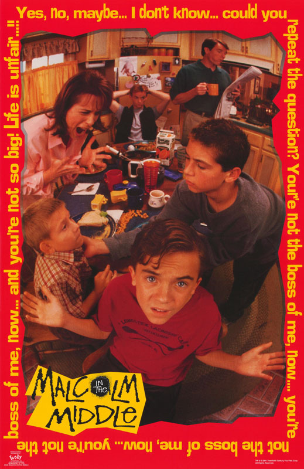

Malcolm of the Middle

Malcolm in the Middle is an American television sitcom created by
Linwood Boomer for the Fox Broadcasting Company. The series premiered
on January 9, 2000, and ended on May 14, 2006, after seven seasons
consisting of 151 episodes.
Main Characters
- Malcolm
- Lois
- Hal
- Francis
- Reese
- Dewey
- Jamie
- Craig
- Stevie
Fun Facts
- Malcolm in the Middle was the first series to win a Peabody Award
for a show that aired on Fox.
- Jane Kaczmarek, who played Lois, was nominated for an Emmy Award
for Outstanding Lead Actress in a Comedy Series for each of the
show's seven seasons.
- Frankie Muniz, who played Malcolm, was nominated for an Emmy
Award for Outstanding Lead Actor in a Comedy Series in 2003.
- Malcolm in the Middle was filmed in a single-camera setup, which was
unusual for sitcoms at the time.
- The very first episode is the only episode where you can see the main characters last name: Wilkerson.